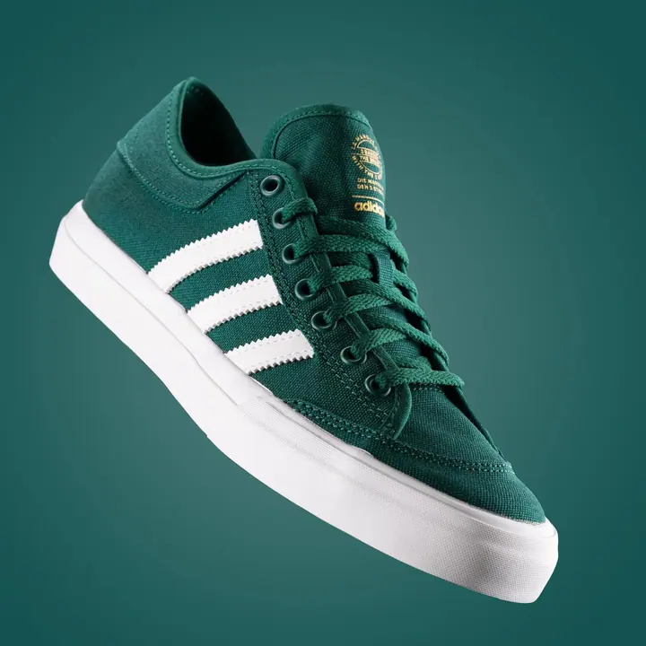
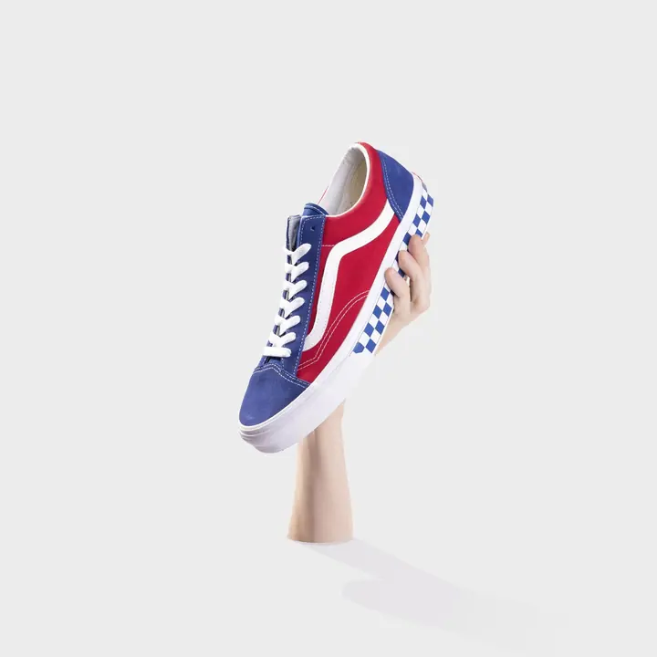
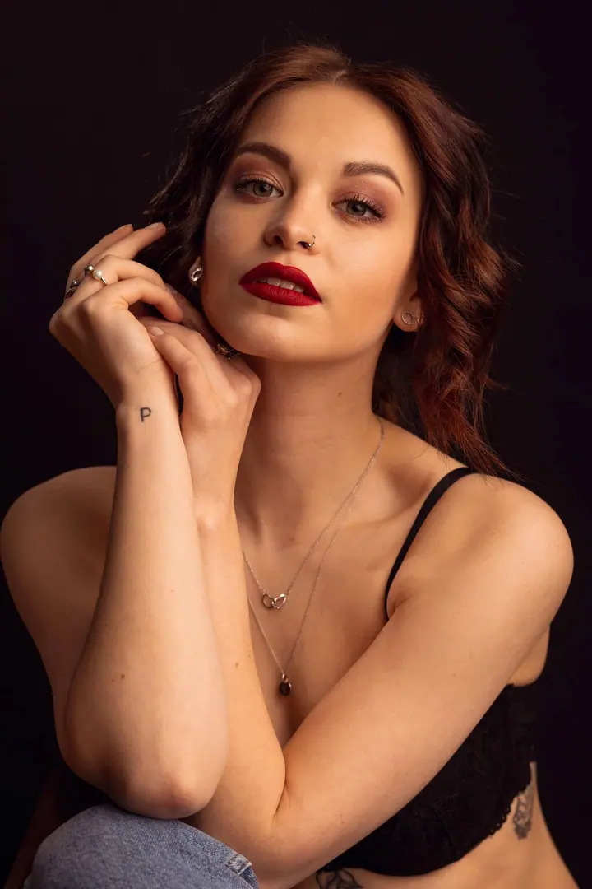
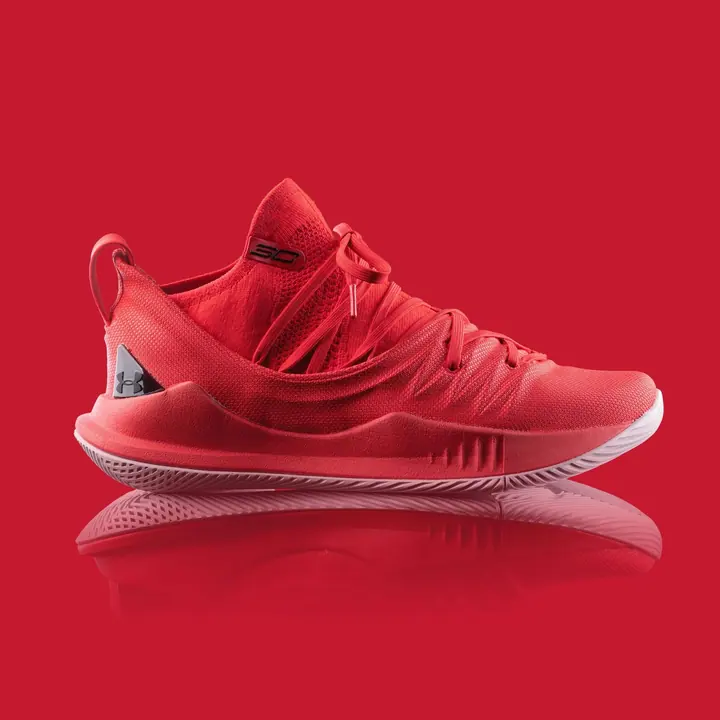
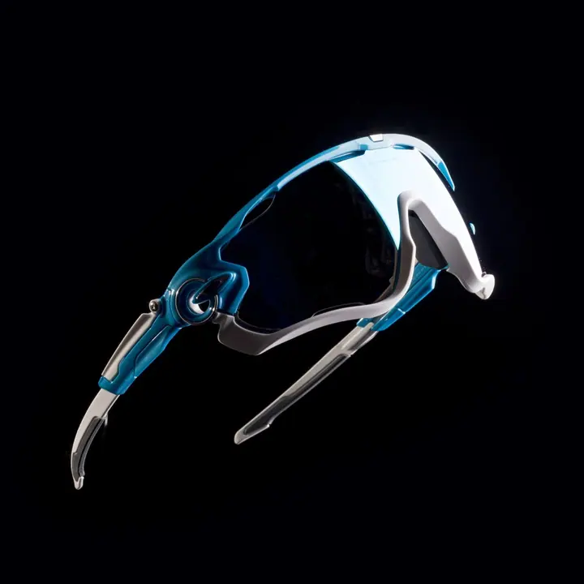
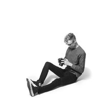

01 / 04
Produktová fotografie
Produkty fotím ve vlastním studiu Atík. Buď ve výrazných kompozicích se sytými barvami, nebo v čistém vizuálu, kde vynikne jen samotný předmět.
Zeptat se na termín→




Produkty a lidé v sytých barvách
Zeptat se na termín →(01) Ahoj
Jmenuji se Filip Soukup a jsem fotograf s přesahem do video tvorby. Nejvíc se věnuji komerční fotografii, tedy produktům a reklamě . Rád ale fotím i lidi a módu .
(02) Co fotím
01 / 04
Produkty fotím ve vlastním studiu Atík. Buď ve výrazných kompozicích se sytými barvami, nebo v čistém vizuálu, kde vynikne jen samotný předmět.
Zeptat se na termín→02 / 04
Připravím fotky do kampaní pro nadnárodní značky i místní podniky. Fotím venku i ve studiu a podle potřeby přidám video.
Zeptat se na termín→03 / 04
Fotím koncerty, festivaly a firemní akce. Zajímá mě atmosféra, světlo a lidé v davu.
Zeptat se na termín→Dále nabízím
Portréty fotím ve studiu i venku a rád přitom využívám barevné světlo. Blízká je mi fashion fotografie.
↗(04) Postup
Od první zprávy po hotovou galerii.
Krok 1 z 4
Napíšete mi, co potřebujete nafotit a k čemu fotky budou. Společně ujasníme rozsah, styl a termín.
Krok 2 z 4
Navrhnu vizuální směr, tedy jestli půjdeme do sytých barev a výrazné kompozice, nebo do čistého vizuálu. Domluvíme místo, buď moje studio Atík, nebo lokaci.
Krok 3 z 4
Fotím ve studiu, venku nebo přímo na vaší akci. Pokud se hodí, natočím zároveň i video.
Krok 4 z 4
Vyberu a upravím nejlepší záběry a předám je ve formátech, které potřebujete pro web, sociální sítě nebo tisk.
Syté barvy, nebo čistý vizuál
(05) Za objektivem
V oboru se pohybuji víc než 10 let. Za tu dobu jsem pracoval s nadnárodními klienty, s místními podniky i s přáteli. Na každé zakázce mě baví hledat obraz, který funguje sám o sobě.
Ve fotce mám dva póly. Buď výrazné kompozice a syté barvy, nebo čistý vizuál zaměřený na samotný subjekt. Nejraději pracuji ve vlastním studiu Atík a velmi blízká je mi fashion fotografie.
Dlouhodobě se věnuji i klasické fotografii. Analogový materiál si sám vyvolávám a zvětšuji ve vlastní komoře. Je to pro mě nezbytný protipól k běžné práci.

Filip
Filip Soukup · Komerční a produktový fotograf
Produktová fotografie začíná na 3 000 Kč, reklamní focení na 5 000 Kč. Přesnou cenu vám pošlu podle rozsahu zakázky.
Produkty a portréty nejčastěji fotím ve vlastním studiu Atík. Na reklamu a eventy přijedu tam, kde je potřeba.
Ano, mám přesah do video tvorby. Fotky a video můžeme připravit v rámci jednoho natáčecího dne.
Ne. Fotil jsem pro nadnárodní klienty, ale stejně rád pracuji s místními podniky a menšími značkami.
(07) Kontakt
Napište pár vět o tom, co si představujete, a termín, který se vám hodí.